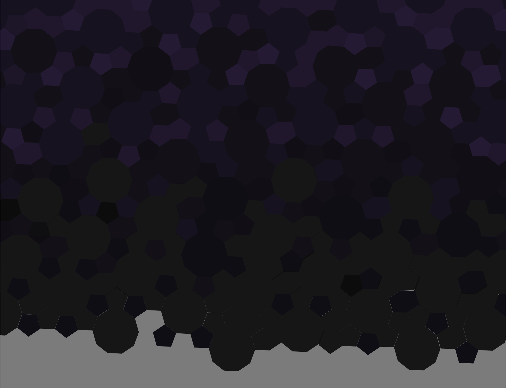

Personal Project
Victor Manuel Didier
Adobe After Effects, Traditional Drawing
3 days
This is a conversation I recorded with a friend in a bar. He is an aspiring social worker reflecting on how he got to that point in his life during the COVID-19 pandemic. I liked the message of the conversation and decided it could do some good for people going through a somber phase in their lives doing a pandemic. I made a hand-drawn video of some snippets of that conversation.
I began plotting out the different drawings I wanted to make on a standard six slot storyboard. These are always helpful as they allow me to keep track of specific facet of any given shot along with chronological placement of the shots and the dialogue they occupy. I also made sure to add certain movements in certain shots to keep them dynamic. For example, In this storyboard, I made sure to change the face from neutral to a smile so that it implied a change in the character's emotional state at that specific point in the script.
Next was a matter of shooting each facet of the hand drawn video. This was a challenge as I did not have the proper equipment suited for the task due to the pandemic. I fixed this by using a home DIY rig. I shifted some lights around my house and used my drafting table to draw the scenes. Luckily, my phone camera had just enough visual fidelity to show the crisp marks I made on the paper.

Creating the final video was a matter of porting over the footage onto my laptop. I used Adobe Premiere Pro to cut the scenes together. Special attention was given to make sure the cuts in between were timed properly. Any slight problems in the editing stage would have resulted in a sloppy finish to the product as the visuals would be out of sync with the dialogue among other problems. Good editing is invisible. Bad editing is very visible. Reflection

This is a personal project that I made during the first year of the Corana virus pandemic. I never made a video like this before so figuring out the shooting setup was a fun little challenge. I went back to editing several times here as the smallest mistakes would only make themselves clear once I watched the whole video. I'm glad I spent that extra time cleaning up the editing though. It gave this conversation a much-deserved polish.
Redesigning a brand focusing on breast cancer awareness. This website became a finalist at the Eunoia UX Hackathon.


A mobile app that connects Dungeon and Dragons (DnD) players in your area.

Redesigning website and improving self-checkout to reduce work load on staff.